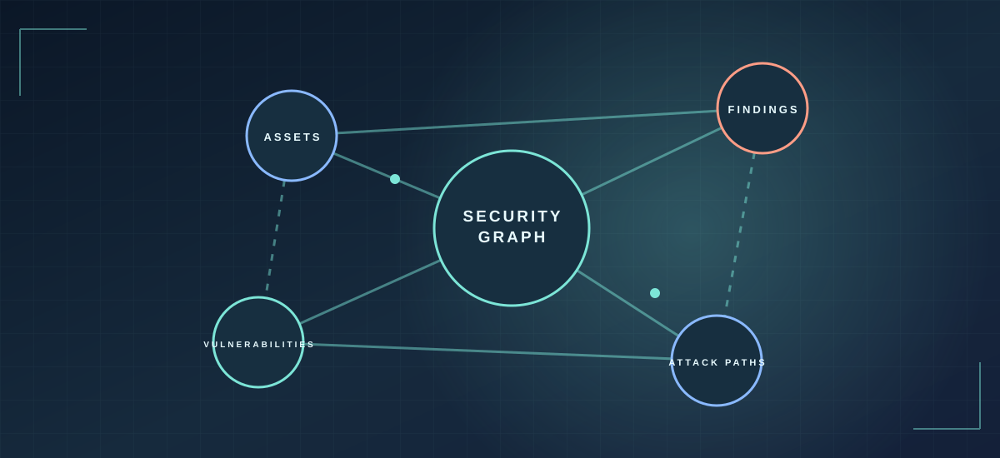

01 / Private project · Active developmentPrivate project · Active development
BUILDINGSentinel Graph AI
A developing security investigation tool that will show how a weakness in one system could affect other connected systems. I am building its data model, services, and interface; AI-assisted analysis is planned and is not yet available.
- Linking systems, vulnerabilities, and security findings so related risks can be viewed together.
- Building a FastAPI and PostgreSQL backend with a React and TypeScript interface.
- Designing investigation views that can help an analyst follow possible paths through a network.
Current stage Architecture, connected records, and inventory views are in development. The project is private and has not launched.
FastAPIPostgreSQLReactSecurity graphIn progress